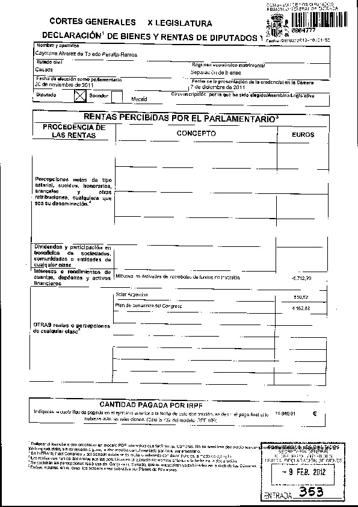
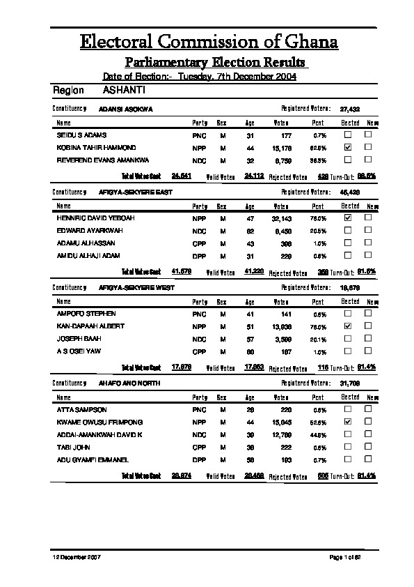
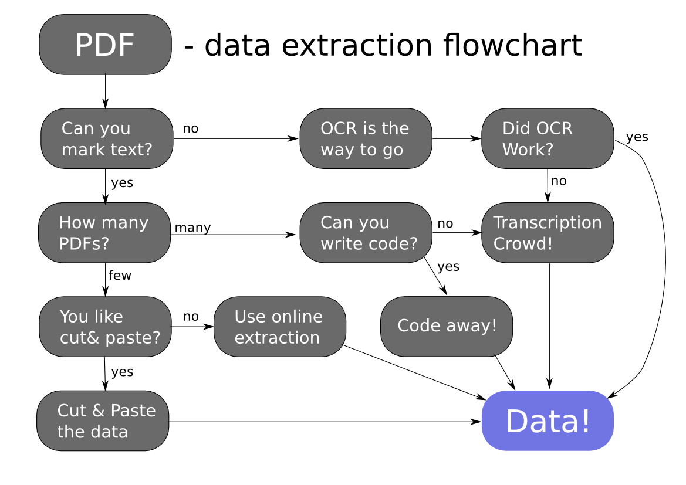

Extracting data from PDFs
School of Data
January 10 2012
School of Data
January 10 2012
We all love to have data in clear machine readable formats, but often we get documents like these:
 
PDF Documents come in two flavors: Text based or image based. To determine what kind of flavor your pdf document is: try to select text in the relevant sections: Can you mark them as text?
If you're handling text based PDFs, the next question to ask yourself is how many PDFs will you handle and are they all the same?
There are two basic ways to get data out of little numbers of text based PDFs: Either use online extraction or cut'n' paste.
There are several online extraction tools such as: http://www.pdftoexcelonline.com/. However sometimes it's easier to cut and paste the data and there you go!
Handling a lot of documents and automatically requires some programming skills? Do you program or do you know someone?
Python Libraries:
If you have a lot of documents that need to be translated into data - sometimes you'll need to ask for help. You can use services like google docs to organize all the documents and get the data or use crowdcrafting.org (Example app). Although this needs a human to do it - gathering volunteers can make the process a lot easier.
If you're using image based documents OCR (Optical Character
Recognition) is the way to go. Try either free online services
like: http://www.free-ocr.com/ or
http://www.newocr.com/. Also
Google Drive has OCR integrated.
If you want to process a lot of documents automatically OCR
software like Tesseract-OCR
helps.
If OCR did not work - go for a Transcription Crowd
School of Data Schoolofdata.org
Licensed CC-Attribution-Sharealike
Icons (CC-By) Glyphicons
 Yes - then continue
Yes - then continue  No - continue
No - continue  Few - Follow
Few - Follow  Many - go ahead
Many - go ahead